BLE Fitness Tracker Application on SAM E51 Curiosity Nano Evaluation Kit and Nano Base for Click boards
Download
Description:
The application demonstrates a solution based on Microchip products for the health care industry and wearable products. The application displays heart rate readings (in beats per minute - bpm) on a very low power consuming display and posts this Heart Rate data to Microchip Bluetooth Data (MBD) android mobile application via BLE (Bluetooth Low Energy).
The Mikro Elektronika Heart Rate 9 click board is used to read the heart pulse. Mikroelektronika eINK click bundle is used for displaying heart rate. The eINK click bundle contains the eINK click adapter board and the eINK display. BM71 Bluetooth module is used to send the heart rate data over BLE.
The Heart Rate 9 click introduces Microchip’s proprietary method of measuring multiple signals in a body using pseudorandom binary sequence generation and phase division multiplexing This algorithm for processing data from the sensor and it can send data for 3 different diodes (green, ir, red) who give out a diagram of the heartbeat and its frequency per minute.
The eINK display is a very low power consumption display and it can retain the information, even after disconnecting from the power source. The host MCU SAM E51 is interfaced with the Heart Rate 9 click over the USART interface and eINK click over SPI Interface.
Modules/Technology Used:
- Peripheral Modules
- Timer
- EIC
- SERCOM (SPI)
- SERCOM (USART)
- BM71 Driver
- STDIO Library
Hardware Used:
- SAM E51 Curiosity Nano Evaluation Kit
- Curiosity Nano Base for Click Boards
- Heart Rate 9 click
- EINK CLICK BUNDLE
- BM71-XPRO
Software/Tools Used:
This project has been verified to work with the following versions of software tools:
- MPLAB Harmony v3 “csp” repo v3.8.3
- MPLAB Harmony v3 “core” repo v3.8.1
- MPLAB Harmony v3 “dev_packs” repo v3.8.0
- MPLAB Harmony v3 “mhc” repo v3.6.5
- MPLAB Harmony v3 “bt” repo v3.4.0
- MPLAB Harmony 3 Launcher Plugin v3.6.2
- MPLAB X IDE v5.45
- MPLAB XC32 Compiler v2.41
- Install Microchip Bluetooth Data Android App in your android mobile
Because Microchip regularly update tools, occasionally issue(s) could be discovered while using the newer versions of the tools. If the project doesn’t seem to work and version incompatibility is suspected, It is recommended to double-check and use the same versions that the project was tested with.
Adding private characteristics to BM71:
Hardware Setup
- In BM71-XPRO, Change jumper J2 to select USB
- In BM71-XPRO, Configure DIP switch SW2 with the below configurations
- All DIP switch ON
- Power the BM71-XPRO from a Host PC through a Type-A male to Micro-B USB cable connected to Micro-B port (J1)
- Perform reset by pressing switch SW1 on BM71-XPRO and check blue LD1 is ON

Programming private characteristics
- Download the manual configuration tool from BM70/71 Firmware & Software Tools v1.11
- Extract and locate configuration tool from below location - Your_downloaded_folder
\Firmware & Software Tools v1.11\ConfigurationTool\IS187x_102_BLEDK3v1.11_UI1.00 - Double click on “
IS187x_102_BLEDK3v1.11_UI1.00.exe“ - Click on “Load” button and select “Load Text File”
 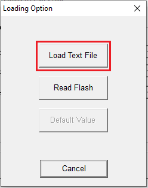
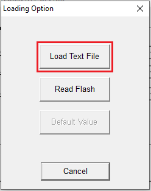 - Select “bm71_heart_rate_service_chars_config.txt” from bm71_configuration folder present in firmware folder
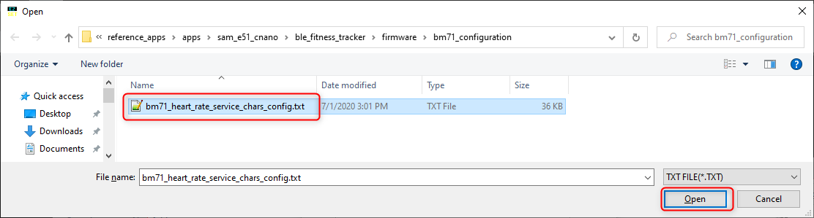 -
Click on “EDIT” option

-
Select “0x01: BM71” in BLEDK and click ok

-
Click on “Finish”
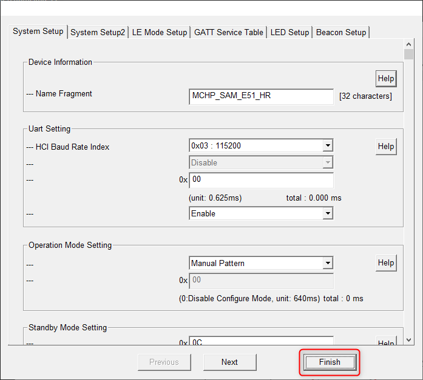 -
Click on “Write”

-
Select respective COM Port and set baud rate to 115200 then click on Write

-
Click on Yes to successfully update the private characteristics on to BM71 module

-
After successful update, click OK and remove the power from BM71-XPRO and change jumper J2 to select EXT

- Turn OFF DIP 1 switch
Setup:
- Mount SAM E51 Curiosity Nano Evaluation Kit on “CNANO56_HOST_CONN” (U3) connector of Curiosity Nano Base board
- Mount Heart Rate 9 click board on mikro bus 3 connector of Curiosity Nano Base board
- Mount the eINK click bundle (eINK click + eINK dispaly) on the mikro bus 1 connector of Curiosity Nano Base board
- Connect the BM71-XPRO on to EXT 1 connector of Curiosity Nano Base board
-
Power the SAM E51 Curiosity Nano Evaluation Kit from a Host PC through a Type-A male to Micro-B USB cable connected to Micro-B port (J105)
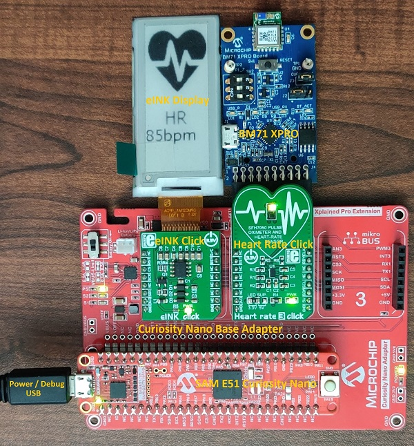
Programming hex file:
The prebuilt hex file can be programmed by following the below steps.
Steps to program the hex file
- Open MPLAB X IDE
- Close all existing projects in IDE, if any project is opened.
- Go to File -> Import -> Hex/ELF File
- In the “Import Image File” window, Step 1 - Create Prebuilt Project, Click the “Browse” button to select the prebuilt hex file.
- Select Device has “ATSAME51G17D”
- Ensure the proper tool is selected under “Hardware Tool”
- Click on Next button
- In the “Import Image File” window, Step 2 - Select Project Name and Folder, select appropriate project name and folder
- Click on Finish button
- In MPLAB X IDE, click on “Make and Program Device” Button. The device gets programmed in sometime
- Follow the steps in “Running the Demo” section below
Programming/Debugging Application Project:
- Open the project (ble_fitness_tracker\firmware\sam_e51_cnano.X) in MPLAB X IDE
- Ensure “PKOB nano” is selected as hardware tool to program/debug the application
- Build the code and program the device by clicking on the “make and program” button in MPLAB X IDE tool bar
- Follow the steps in “Running the Demo” section below
Running the Demo:
Before proceeding, install the Microchip Bluetooth Data android app in an Android Smartphone.
- Enable Bluetooth and location from Smartphone settings
- Perform reset by unplugging and re-plugging the power cable of SAM E51 Curiosity Nano Evaluation Kit
-
Parallelly, open the “Microchip Bluetooth Data (MBD)” android app from your smartphone and tap on “Bluetooth Smart” icon on the dashboard. If prompted, allow the application to turn on Bluetooth.
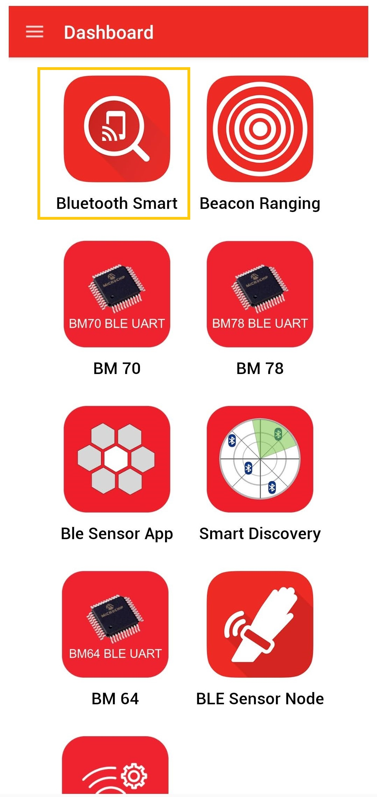 - After power-up, the application displays the Microchip logo on the eINK display and initializes the heart rate sensor
-
After successful initialization of the heart rate sensor, two integrated LEDs on the heart rate 9 click lights up
-
Now, scan for Bluetooth devices by tapping START SCAN option on the MBD APP. The BM71 device should appear as MCHP_SAM_E51_HR in the list of Bluetooth devices.

-
Stop the scan and connect the MCHP BLE device by clicking on MCHP_SAM_E51_HR. This will establish a connection between the MBD BLE application and the BM71 BLE device.
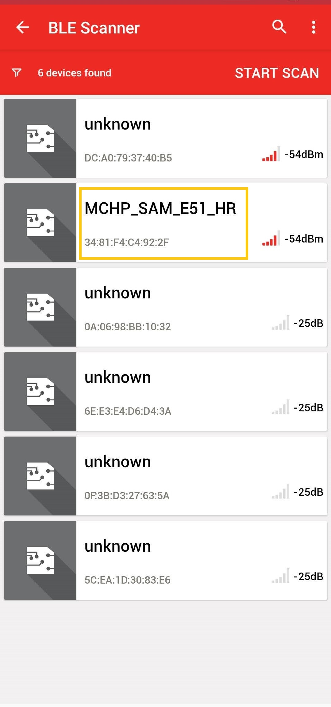
-
Once BLE device is connected, the application shows the different services screen. Scrolll down and tap on the Heart Rate Service, it will redirect to Sensor Location screen.
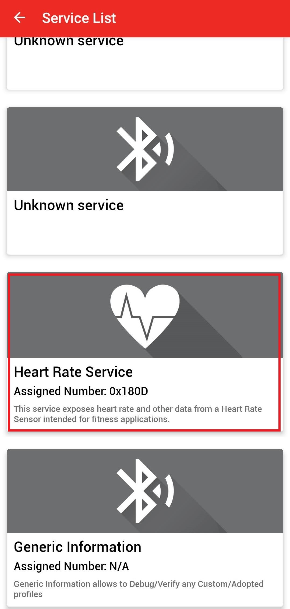 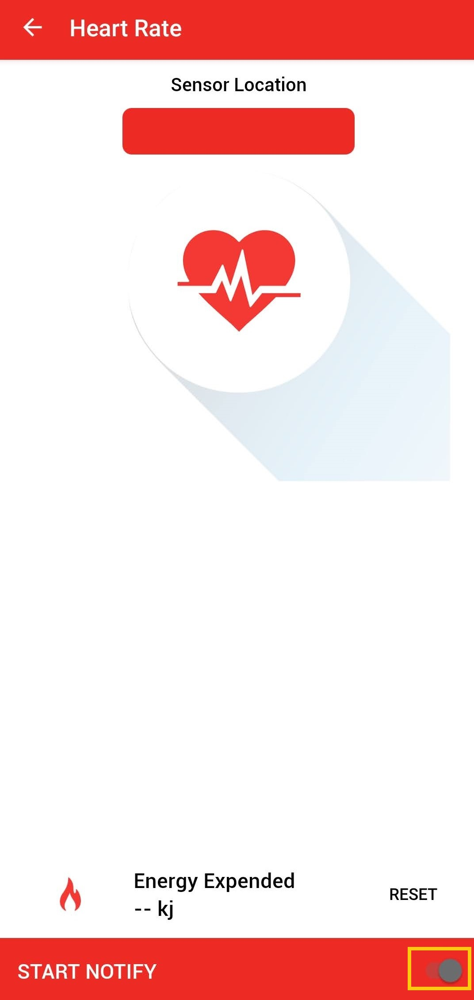 -
Keep your finger on Pulse Detection Indicator on the heart rate 9 click sensor as shown in the figure below.
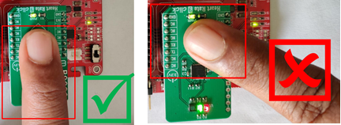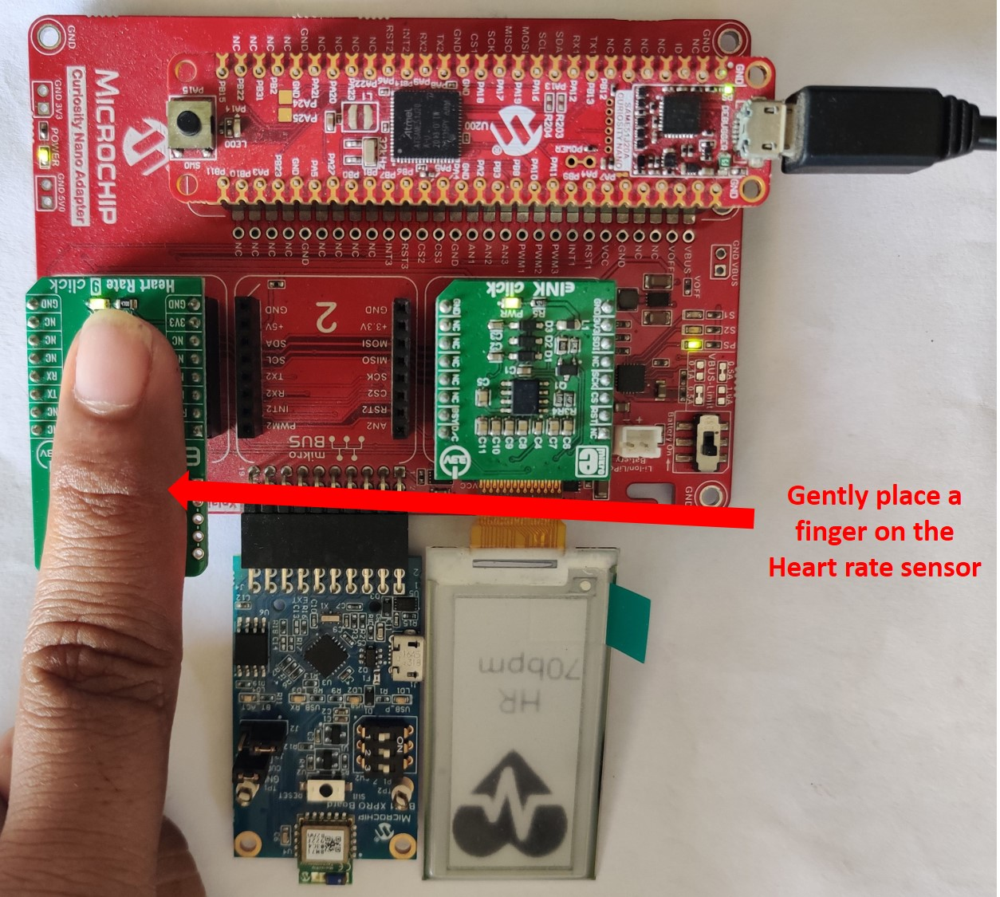
-
In the bottom right corner of the Sensor Location screen, disable and enable the Notify Button.

- Wait till the LED “LED0” on SAM E51 Curiosity Nano Evaluation Kit goes off. Once the LED is off, lift your finger.
Note: Make sure smartphone screens are not turned off and don’t switch to any other App(s) on your smartphone. - The heart rate value (in bpm - beats per minute) gets displayed on the Sensor Loaction screen as shown in the figure below. Also, the same heart rate value gets displayed on the eINK display.

Running the Demo without BLE:
Note: To test the demo without BLE, disconnect the BM71-XPRO from EXT 1 connector of the Curiosity Nano Base board.
- Perform reset by unplugging and re-plugging the power cable of SAM E51 Curiosity Nano Evaluation Kit
- After power-up, the application displays the Microchip logo on the eINK display and initializes the heart rate sensor
- After successful initialization of the heart rate sensor, two integrated LEDs on the heart rate 9 click lights up
- Press the switch “SW0” on SAM E51 Curiosity Nano Evaluation Kit, LED “LED0” on SAM E51 Curiosity Nano Evaluation Kit glows on
- Place your index finger gently on the heart rate 9 click sensor as shown in the figure below
- Wait till the LED “LED0” on SAM E51 Curiosity Nano Evaluation Kit goes off and then lift your finger
- The heart rate value (in bpm - beats per minute) gets displayed on the eINK display
Comments:
- Place your index finger gently on the heart rate 9 click sensor, don’t push or put pressure on the sensor (the heart rate values may not be accurate)
- Make sure the smartphone screen is not turned off when reading Heart Rate Sensor data using the MBD smartphone APP and also, don’t switch to any other smartphone App(s)
- Reference Training Module:
- This application demo builds and works out of the box by following the instructions above in “Running the Demo” section. If you need to enhance/customize this application demo, you need to use the MPLAB Harmony v3 Software framework. Refer links below to set up and build your applications using MPLAB Harmony.
- Code related for Heart Rate services are added manually. Harmony v3 framework doesn’t generate code about it.
Revision:
- v1.2.0 - Regenerated and tested application.
- v1.1.0 - Regenerated and tested application.
- v1.0.0 - Released demo application